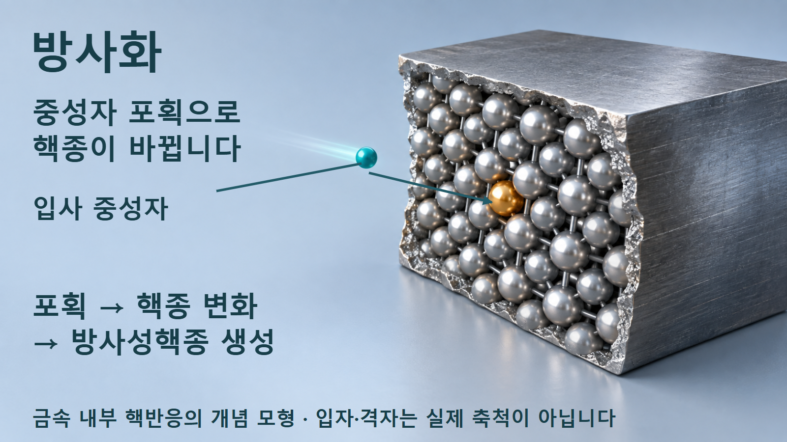
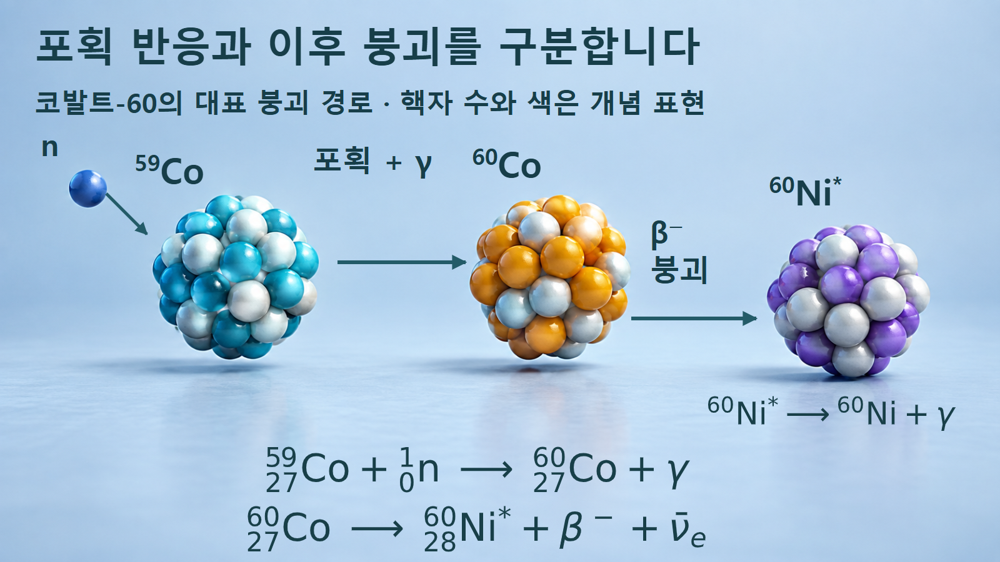
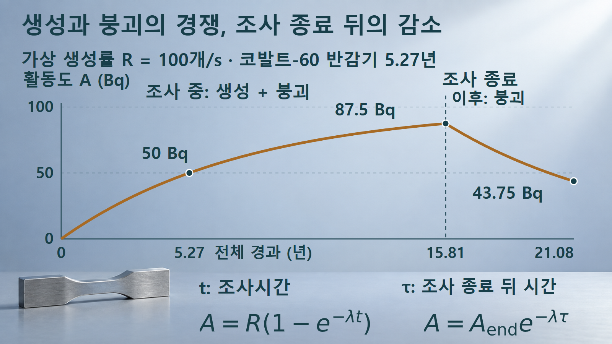
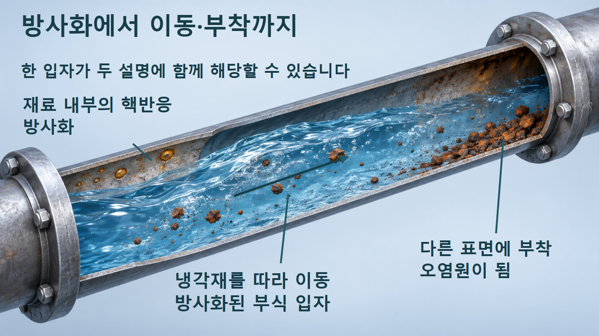

방사성붕괴와 시간 · 059
방사화
중성자에 의한 생성과 조사 중·종료 뒤의 붕괴
생성된 핵종은 조사 중에도 붕괴합니다. 코발트-60의 포획·붕괴 경로와 두 계산으로 포화에 접근하는 이유, 조사 종료 뒤에도 활동도가 남는 이유를 설명합니다.

물질 안에서 방사성핵종이 만들어집니다
방사화는 핵반응으로 물질 안에 방사성핵종이 만들어지는 현상입니다. 원자로의 중성자가 구조재나 냉각재 속 원자핵에 반응하는 경우가 한 예입니다. 이 글에서는 안정한 코발트-59가 중성자를 포획해 코발트-60이 되는 경로를 사용합니다. 중성자가 닿았다는 사실만으로 모든 원자가 같은 정도로 방사화되는 것은 아닙니다. [1]
반응할 표적 핵종의 양과 중성자 환경, 반응 가능성, 조사시간이 생성량에 영향을 줍니다. 동시에 생성된 방사성핵종은 조사 중에도 붕괴합니다. 따라서 방사화량을 단순히 “일정한 속도 × 시간”으로 계산할 수 있는지는 붕괴가 얼마나 누적되는지에 달려 있습니다. [2]
방사화와 표면 오염은 서로 다른 질문에 답합니다. 방사화는 방사성핵종이 생성된 과정을, 오염은 원치 않는 곳에 방사성물질이 존재하는 상태를 설명합니다. 방사화된 물질이 부식 등으로 떨어져 이동하면 두 설명이 한 물질에 동시에 적용될 수 있습니다. [1]
생성항과 붕괴항을 함께 둡니다
코발트-59가 중성자를 포획하면 질량수는 59에서 60으로 늘지만 원자번호는 27로 유지됩니다. 포획 반응에서는 감마선이 방출될 수 있고, 만들어진 코발트-60은 약 5.27년의 반감기로 베타붕괴합니다. 대표 경로에서는 들뜬 니켈-60 상태를 거쳐 감마선을 방출하며 낮은 에너지 상태로 내려갑니다. [1] [3] [4]
중성자 포획 때의 감마 방출과, 나중에 코발트-60이 붕괴하면서 뒤따르는 감마 방출은 구분해야 합니다.

그림의 별표는 니켈-60의 들뜬 상태를 나타냅니다. 베타붕괴에서 전자와 전자 반중성미자가 함께 표시되며, 질량수는 60을 유지하고 원자번호는 28로 바뀝니다. 도식은 대표 경로를 줄여 그린 것으로 모든 붕괴가 반드시 동일한 감마선 묶음을 방출한다는 뜻이 아닙니다. 색과 구슬 개수는 실제 핵자 배치를 재현하지 않습니다. [4]
생성률을 R, 생성된 방사성핵종의 원자수를 N, 붕괴상수를 λ라고 하면 dN/dt=R−λN입니다. 생성물이 처음에 없고 R이 일정할 때의 해는 N=(R/λ)(1−e−λt)입니다. 양변에 λ를 곱하면 활동도는 다음과 같이 구합니다. [2]
R의 단위는 생성 원자수/s이고 A의 단위는 붕괴 횟수/s, 즉 Bq입니다. 포화상태에서 두 수치가 같아지는 것은 생성률과 붕괴율이 균형을 이루기 때문입니다. 포화값 R을 처음부터 방사성핵종의 원자수로 해석하지 않습니다.
조사시간과 냉각시간을 분리한 계산
가상 시료에서 생성률을 R=100개/s로 일정하게 두고 코발트-60 반감기 5.27년을 적용합니다. 표적의 소모와 중성자속 변화는 없으며 시작할 때 생성물은 0개입니다. λ=ln2/5.27≈0.131527 년−1입니다. 1년을 365.25일로 바꾸면 λ≈4.16784×10−9 s−1입니다. 지수 λt에는 반드시 같은 시간 단위를 사용합니다.
예시 1 — 반감기 한 번 동안 조사합니다. t=5.27년이면 e−λt=1/2이므로 A=100×(1−1/2)=50 Bq입니다. 세 반감기인 15.81년을 조사하면 A=100×(1−1/8)=87.5 Bq입니다. 조사시간을 세 배로 늘렸지만 활동도는 세 배가 되지 않습니다. 조사 중 붕괴가 계속되기 때문에 포화값 100 Bq에 점차 가까워집니다.
예시 2 — 세 반감기 조사 뒤 한 반감기 냉각합니다. 조사 종료 활동도 Aend=87.5 Bq에서 생성이 중단되면, 이후 냉각시간 τ에 대해 A=Aende−λτ입니다. τ=5.27년이면 A=87.5/2=43.75 Bq입니다. 조사를 끝냈다는 사실과 남은 활동도가 0이라는 말은 다릅니다.
조사를 끝내면 공급항은 사라지고, 그때 남아 있던 방사능이 냉각시간에 따라 감소합니다.

그래프의 가로축은 시작부터의 전체 경과시간입니다. 왼쪽 곡선의 t는 조사시간이며 오른쪽 식의 τ는 조사 종료를 새 영점으로 삼습니다. 따라서 오른쪽 끝의 전체 경과시간 21.08년은 15.81년 조사와 5.27년 냉각을 합한 값입니다. 이 값은 실제 설비나 방사성물질의 취급 가능 시점을 정한 기준이 아닙니다.
조성·반응률·이동을 연결합니다
단일 에너지의 균일한 중성자장과 일정한 표적을 가정하면 시료 전체 생성률을 R=φσNtarget으로 나타낼 수 있습니다. φ는 중성자속(cm−2s−1), σ는 해당 반응의 미시적 단면적(cm2), Ntarget은 시료 전체 표적 원자수입니다. 이 곱은 개/s이며, 단위 부피당 생성률과 구분합니다. 에너지 분포가 넓은 실제 장에서는 에너지에 따른 반응률을 함께 고려해야 합니다. [1] [2]
구조재의 미량 원소도 생성핵종의 종류에 영향을 줄 수 있습니다. 재료의 이름만으로 결과를 정하지 않고 실제 조성과 중성자 환경을 연결합니다. 코발트-60 사례가 모든 재료의 모든 방사화 경로를 대표하지는 않습니다. 반응마다 생성물의 반감기와 방출 방사선이 다릅니다. [1]
방사화된 부식 입자가 냉각재를 따라 이동하면 다른 표면에 붙어 오염원이 될 수 있습니다.

배관 단면의 왼쪽은 재료 내부에서 핵종이 바뀐다는 점을, 가운데는 방사화된 부식 생성물의 이동을, 오른쪽은 다른 표면에 부착하는 상태를 설명합니다. 방사화 여부와 이동 가능성을 따로 살펴야 어느 위치에서 방사성물질이 관찰되는지 이해할 수 있습니다. 그림의 열린 수면과 크게 그린 입자는 경로를 보이기 위한 개념 표현이며 실제 원자로 배관의 운전 상태가 아닙니다.
일정한 생성률 모형의 경계
단순식은 생성률이 일정하고 표적이 거의 줄지 않으며, 생성핵종의 손실이 붕괴 하나로 설명된다는 가정에 의존합니다. 표적이 소모되거나 생성물이 다시 중성자 반응을 겪으면 식이 달라집니다. 조사 중 중성자속이나 에너지 분포가 바뀌어도 R을 하나의 상수로 두는 근사를 재검토해야 합니다. [2]
여러 핵종이 함께 만들어지는 실제 물질에서는 하나의 반감기만으로 전체 활동도의 감소를 표현할 수 없습니다. 짧은 반감기의 성분이 먼저 줄어든 뒤 장수명 성분의 비중이 커질 수 있으므로, 초기 활동도가 같다고 장기 거동까지 같다고 가정하지 않습니다.
활동도가 줄어드는 계산만으로 재료의 선량률, 차폐 요구나 작업 조건을 정할 수는 없습니다. 방출 에너지와 방사선 종류, 분포와 형상 등의 정보가 추가로 필요합니다. 여기서의 조사·냉각시간은 생성과 소멸을 비교하는 교육용 변수이며 설비 운전이나 정비 절차를 제시하지 않습니다.
생성·재고·위치를 나누어 읽습니다
| 항목 | 뜻 | 확인할 조건 |
|---|---|---|
| 생성률 R | 초당 만들어지는 원자수 | 표적 조성·중성자 환경·반응률 |
| 조사 중 활동도 | 생성과 붕괴의 경쟁 | 일정 생성률·초기 생성물 |
| 냉각 중 활동도 | 조사 종료 재고의 붕괴 | 새 영점 τ·생성 중단 |
| 오염 위치 | 방사성물질이 존재하는 곳 | 부식·이동·부착 |
방사화의 핵심은 물질 속 핵종이 핵반응으로 달라지는 데 있습니다. 조사하는 동안에도 생성물은 붕괴하며, 조사 종료 뒤에는 남은 재고가 감소합니다. 생성된 물질이 이동할 수도 있으므로 핵반응의 기원과 현재 위치를 함께 설명해야 재료와 환경을 올바르게 해석할 수 있습니다.